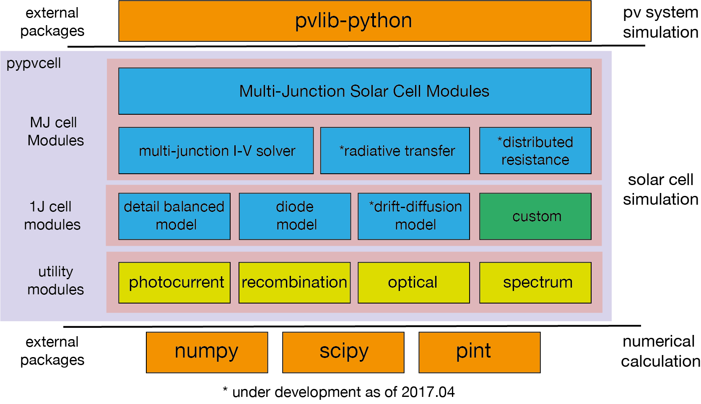

Pypvcell: An extensible programming framework for modeling solar cell¶
Pypvcell is collection of python functions for simulating the I-V characteristics of solar cell. It is designed to be Pypvcell is a robust, extensible, easy-to-use framework for modeling the I-V characteristics of solar cells. It currently specialized in modeling multi-junction solar cell.
Features¶
- Written in pure python and its ecosystem
- Adopt innovative designs to simplify the codes
- Documented and tested
Overview of the model¶
Installation and Download¶
Examples¶
In Pypvcell, a type of solar cell is defined as class. For example, here’s a way to define a solar cell class. The following code demonstrates how to set up a solar cell at Shockley-Queisser limit:
from pypvcell.illumination import Illumination
from pypvcell.solarcell import SQCell
#Setup the illumination
input_ill = Illumination("AM1.5g", concentration=1)
# Setup the solar cell at a band gap of 1.42 eV
sq_cell = SQCell(eg=1.42, cell_T=293, n_c=1, n_s=1)
sq_cell.set_input_spectrum(input_spectrum=input_ill)
# Print out the efficiency
print(sq_cell.get_eta())
Prerequisites¶
- Pypvcell support both Python 2.x and 3. However, we recommend using Python 3.
- Numpy, Scipy, Matplotlib
Liscence:¶
MIT
Acknowledgement¶
The development of this software is partly suppored by Japan New Energy and Industrial Technology Development Organization (NEDO). Pypvcell is inspired by Solcore by Markus Furher et al.